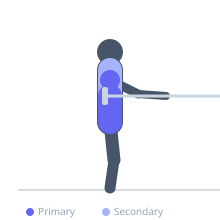
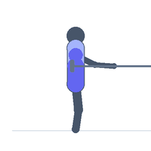

Exercise guide / Landmine 180 — Rainbow
Landmine 180 — Rainbow
The landmine 180 (also called the landmine rainbow) is a rotational power exercise in which the barbell end is swung in a large arc from one side of the body to the other, following the path of a rainbow. The movement loads the core in rotation, the shoulders in overhead pressing, and the hips in rotational bracing simultaneously. The continuous arc demands coordinated full-body rotation and is used in rotational power training, sports performance programs, and functional core conditioning.
Primary muscles
internal oblique
external oblique
deltoid anterior
Secondary muscles
rectus abdominis
pectoralis major clavicular
erector spinae
Stabilizers
gluteus medius
Equipment
Standard Barbell


Starting position
- Load a barbell in a landmine anchor (or wedge the bar in a corner). Stand facing the barbell end, feet shoulder-width apart. Grasp the barbell end with both hands (overlapping or interlaced) and hold at approximately chest height.
Setup
- Begin with a very light load — the arc is long and the shoulder demand is significant. The landmine anchor must be secure.
Steps
- Step 1: Begin with the barbell end at the right hip, arms extended to the right side.
- Step 2: Swing the barbell end upward and across the body in a smooth arc, rotating the torso to the left.
- Step 3: Continue the arc overhead to the left side, controlling the descent as it sweeps down to the left hip.
- Step 4: Reverse the arc direction, sweeping the barbell from the left hip upward and over to the right hip. Each full left-to-right-to-left arc equals one repetition.
Coaching cues
- Think of drawing the arc of a rainbow — smooth, continuous, side to side
- Keep the arms extended throughout — do not collapse the elbows
- Let the torso rotate naturally — do not resist the rotation
Breathing
- Exhale forcefully as the bar sweeps overhead. Inhale as it descends to the hip.
Range of motion
- The arc should travel from one hip, overhead, to the opposite hip. Full range is the goal.
Tempo
- Moderate speed — fluid and controlled, not explosive initially. Build speed as technique improves.
Common mistakes
- Using too much weight — the arc demands shoulder mobility more than strength
- Bending the elbows instead of using the full arm extension throughout the arc
- Stopping at the top rather than flowing continuously through the arc
Safety
- The overhead arc demands full shoulder mobility — do not force range that is not available
- Ensure the landmine anchor is completely secure before each set
Training
- endurance: 5–10 reps
- strength: 4–8 reps
- endurance: 2–3 sets
- strength: 2–3 sets
- Rest: {'endurance': 60, 'strength': 90}